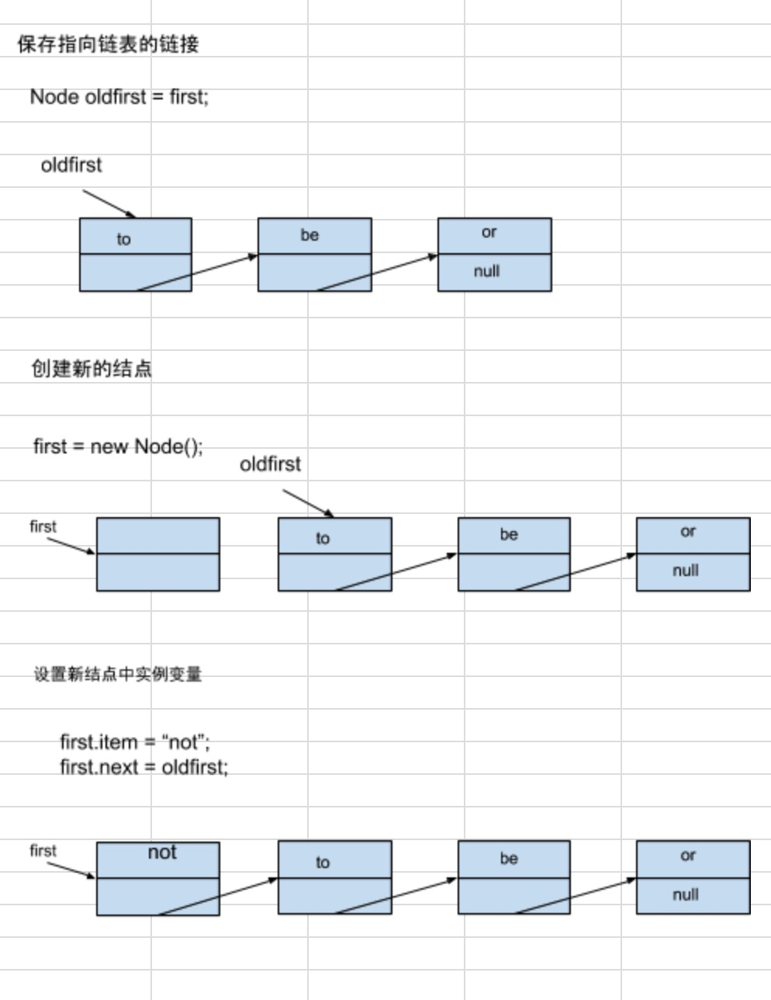
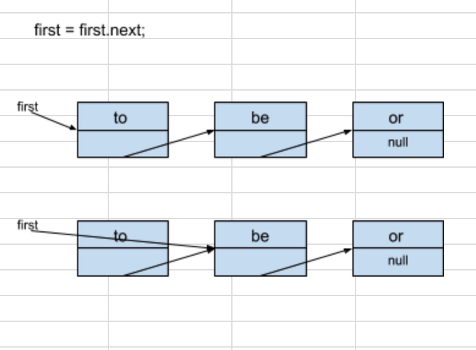
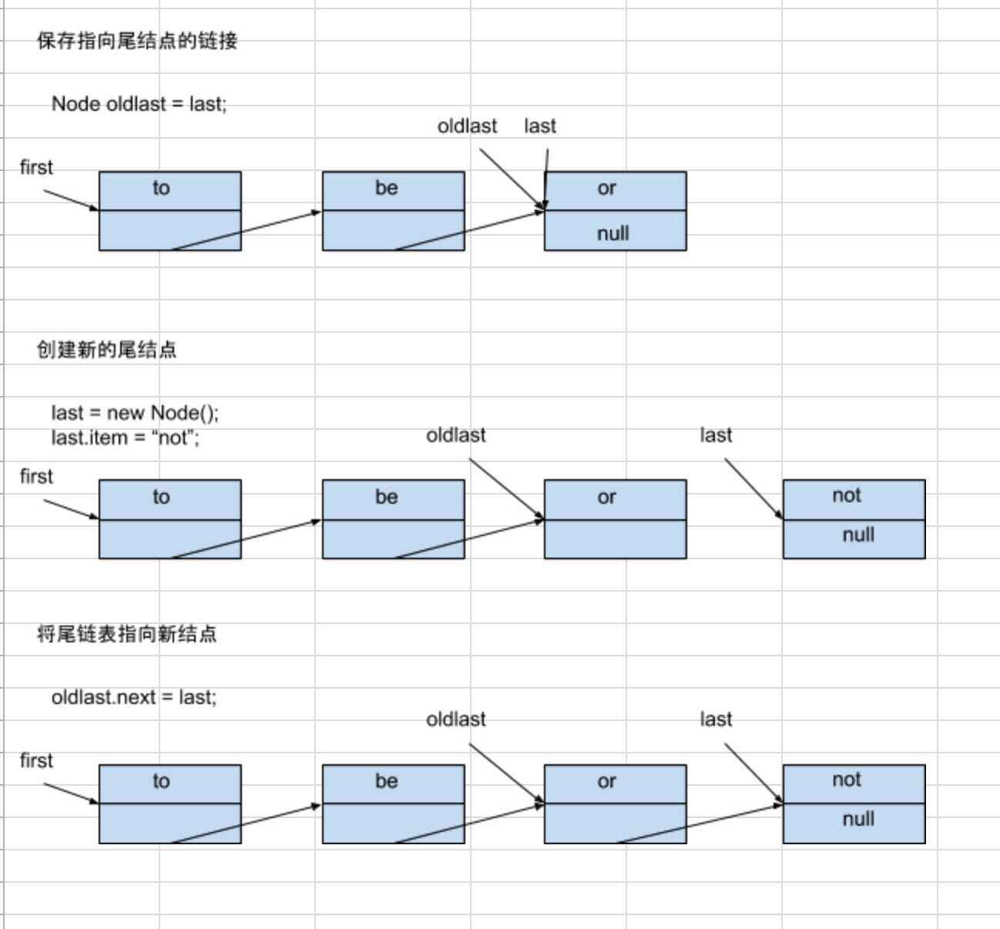

背包、队列和栈¶
See also
许多数据类型都和对象的集合有关，所有的操作都关于添加，删除或访问集合中的对象 这三种数据类型，分别是背包（Bag）、队列（Queue）和栈（Stack）
目标1：说明我们对集合中的对象的表示方式将直接影响各种操作的效率，对于集合来说 ，我们将设计适用于表示一组对象的数据结构并高效地实现所需方法。
目标2：泛型 和迭代，它们都是简单的java概念，能极大地简化用例代码，是高级的编程 语言机制，有了它们我们能够写出更加清晰、简单和优美的用例代码。
目标3：链式数据结构的重要性，特别是经典数据结构链表，理解链表是学习各种算法和数据结构 中最关键的第一步
API¶
背包（Bag）
public class Bag<Item> implements Iterable<Item>
Bag() 构造一个空背包
void add(Item item) 添加一个元素
boolean isEmpty() 背包是否为空
int size() 背包中的元素数量
先进先出（FIFO）队列
public class Queue<Item> implements Iterable<Item>
Queue() 创建空队列
void enqueue(Item item) 添加一个元素
Item dequeue() 删除最早添加的元素
boolean isEmpty() 队列是否为空
int size() 队列中的元素数量
下压（后进先出,LIFO）栈
public class Stack<Item> implements Iterable<Item>
Stack() 创建一个空栈
void push(Item iten) 添加一个元素
Item pop() 删除最近添加的元素
boolean isEmpty() 栈是否为空
int size() 栈中的元素数量
泛型
See also
集合类的抽象数据类型的一个关键特性是我们应该用它们存储任意类型的数据。这种数据类型
被称为 泛型 ,也叫做参数化类型, <Item> 记号将 Item 定义为一个类型参数。
泛型编程很重要
可以编写如下代码来用栈处理 String 对象:
Stack<String> stack = new Stack<String>();
stack.push('Test');
...
String next = stack.pop();
Note
有了范型，我们只需要一份API（一份实现）就能够处理所有类型的数据。
自动装箱
See also
类型参数必须被实例化为 引用类型, java会自动在引用类型和对应的原始数据类型之间的转换。 这种转换有助于同时使用泛型和原始数据类型。
用例:
stack<Integer> stack = new Stack<Integer>();
stack.push(17); // 自动装箱，int -> Integer
int i = stack.pop(); // 自动拆箱 Integer -> int
自动将一个原始数据类型转换为一个封装类型被称为 自动装箱
java在将它赋予变量i之前将它的类型自动转换（自动拆箱）为int
背包¶
See also
背包 是一种不支持从中删除元素的集合数据类型。
样本标准差为每个值和平均值之差的平方之和除以N-1之后的平方根
背包典型用例
public class Stats
{
public static void main(String[] args)
{
Bag<Double> numbers = new Bag<Double>();
while (!StdIn.isEmpty())
numbers.add(StdIn.readDouble());
int N = numbers.size();
double sum = 0.0;
for (double x : numbers)
sum += x;
double mean = sum/N;
sum = 0.0;
for (double x : numbers)
sum += (x - mean) * (x - mean);
double std = Math.sqrt(sum/(N-1));
StdOut.printf("Mean: %.2f\n", mean);
StdOut.printf("Std dev: %.2f\n", std);
}
}
先进先出队列¶
See also
先进先出队列（简称队列）是一种基于先进先出（FIFO）策略的集合类型。
在应用程序中使用队列的主要原因是在应用集合保存元素的同时保存它们的相对顺序，使它们入列顺序和出列顺序相同。
队列典型用例
public static int[] readInts(String name)
{
In in = new In(name);
Queue<Integer> q = new Queue<Integer>();
while (!in.isEmpty())
q.enqueue(in.readInt());
int N = q.size;
int[] a = new Int[N];
for (int i = 0; i < N; i++)
a[i] = q.dequeue();
return a;
}
下压栈¶
See also
下压栈（简称栈）是一种基于后进先出（LIFO）策略的集合类型。
元素的处理顺序和它们被压入的顺序相反。
Stack 用例
public function Reverse
{
public static void main(String[] args)
{
Stack<Integer> stack;
stack = new Stack<Integer>();
while (!StdIn.isEmpty())
stack.push(StdIn.readInt());
for (int i : stack)
StdOut.println(i);
}
}
泛型¶
public class FixedCapacityStackOfStrings
FixedCapacityStackOfStrings(int cap) 创建一个容器为cap的空栈
void push(String item) 添加一个字符串
String pop() 删除最近添加的字符串
boolean isEmpty() 栈是否为空
int size() 栈中的字符串数量
数据类型实现
public class FixedCapacityStackOfStrings
{
private String[] a;
private int N;
public FixedCapacityStackOfStrings(int cap)
{ a = new String[cap]; }
public boolean isEmpty() { return N==0; }
public int size() { return N; }
public void push(String item)
{ a[N++] = item; }
public String pop()
{ return a[--N]; }
}
测试用例
public static void main(String[] args)
{
FixedCapacityStackOfStrings s;
s = new FixedCapacityStackOfStrings(100);
while (!StdIn.isEmpty())
{
String item = StdIn.readString();
if (!item.equals("-"))
s.push(item);
else if (!s.isEmpty()) StdOut.print(s.pop() + " ");
}
StdOut.println("(" + s.size() + " left on stack");
}
使用:
% more tobe.txt
to be or not to - be - - that - - - is
% java FixedCapacityStackOfStrings < tobe.txt
to be not that or be (2 left on stack)
完全理解这个实现，我们画一个栈实现轨迹:
------------------------------------------------------
stdin stdout N a[0] a[1] a[2] a[3] a[4]
------------------------------------------------------
0
to 1 to
be 2 to be
or 3 to be or
not 4 to be or not
to 5 to be or not to
- to 4 to be or not
be 5 to be or not be
- be 4 to be or not
- not 3 to be or
that 4 to be or that
- that 3 to be or
- or 2 to be
- be 1 to
is 2 to is
------------------------------------------------------
有些缺点限制了它的通用能力。
泛型¶
FixedCapacityStackOfStrings的第一缺点是它只能处理String对象。
如何实现一个泛型的栈？
实现一个FixedCapacityStack类，我们把所有的FixedCapacityStackOfStrings中的所有String替换成Item 声明类 public class FixedCapacityStack>Item>
Note
在FixedCapacityStack的构造函数中创建一个泛型的数组
a = new Item[cap]; ❌
创建泛型数组在java中是不被允许的
a = (Item()) new Object[cap]; ✅
类型转换
public class FixedCapacityStack<Item>
FixedCapacityStack(int cap) 创建一个容量为cap的空栈
void push(Item item) 添加一个元素
Item pop() 删除最近添加的元素
boolean isEmpty() 栈是否为空
int size() 栈的元素数量
数据类型的实现
public class FixedCapacityStack<Item>
{
private Item[] a;
private int N;
public FixedCapacityStack(int cap)
{ a = (Item[]) new Object[cap]; }
public boolean isEmpty() { return N == 0; }
public int size() { return N; }
public void push(Item item)
{ a[N++] = item; }
public Item pop()
{ return a[--N]; }
}
测试用例
public static void main(String[] args)
{
FixedCapacityStack<String> s;
s = new FixedCapacityStack<String>(100);
while (!StdIn.isEmpty()){
String item = StdIn.readString();
if (!item.equals("-"))
s.push(item);
else if (!s.isEmpty()) StdOut.print(s.pop() + " ");
}
StdOut.println("(" + s.size() + " left on stack)");
}
使用方法:
% more tobe.txt
to be or not to - be - - that - - - is
% java FixedCapacityStack < tebe.txt
to be not that or be (2 left on stack)
调整数组大小¶
选择用数组表示栈的内容意味着用例必须预先估计栈的最大容量。在java中，数组一旦被创建其大小是无法改变的。
因此栈使用的空间只能是这个最大容量的一部分，选择大容量的用例在栈为空或几乎为空时会浪费大量内存。
比如：一个交易系统可能会涉及数十亿笔交易和数千个交易集合。即使这种系统一般会限制每笔交易只能出现在一个集合中，但用例必须 保证所有集合都有能力保存所有的交易，另一方面，如果集合变得比数组更大那么用例有可能溢出。
实现一个方法将栈移动到另一个大小不同的数组中
private void resize(int max)
{
// 将大小为N <= max 的栈移动到一个新的大小为max的数组中
Item[] temp = (Item[]) new Object[max];
for (int i = 0; i < N; i++)
temp[i] = a[i];
a = temp;
}
修改push方法，检查数组是否太小
public void push(Item item)
{
if (N == a.length) resize(2 * a.length);
a[N++] = item;
}
修改pop方法，如果数组太大将它长度减半, 栈大小是否小于数组的1/4
public Item pop()
{
// 从栈顶删除元素
Item item = a[--N];
a[N] = null; // 对象游离
if (N > 0 && N === a.length/4) resize(a.length * 2);
return item;
}
对象游离¶
See also
java的垃圾收集策略是回收所有无法被访问的对象的内存，在我们对pop()的实现中，被弹出的元素 的引用仍然存在于数组中，这个元素实际上已经是一个孤儿了—– 它永远不会再被访问了，但java的垃圾收集器没法 知道这一点，除非引用被覆盖，避免游离很容易，只需将被弹出的数组元素的值设为null即可。
轨迹:
--------------------------------------------------------------------------------------
push() pop() N a.length a[0] a[1] a[2] a[3] a[4] a[5] a[6] a[7]
--------------------------------------------------------------------------------------
0 1 null
to 1 1 to
be 2 2 to be
or 3 4 to be or nulll
not 4 4 to be or not
to 5 8 to be or not to null null null
- to 4 8 to be or not null null null null
be 5 8 to be or not be null null null
- be 4 8 to be or not null null null null
- not 3 8 to be or null null null null null
that 4 8 to be or that null null null null
- that 3 8 to be or null null null null null
- or 2 4 to be null null null null null null
- be 1 2 to null null null null null null null
is 2 2 to is
--------------------------------------------------------------------------------------
迭代¶
集合数据类型的基本操作之一是，能够使用java的foreach语句通过迭代遍历并处理集合中的每一个元素。
打印出一个字符串集合中的所有元素的用例
Stack<String> collection = new Stack<String>();
...
for (String s : collection)
StdOut.println(s);
...
任意可迭代的集合数据类型中我们需要实现
集合数据类型必须实现一个iterator()方法并返回一个Iterator对象
Iterator类必须包含两个方法：
hasNext()和next()
对应的接口（即java.lang.Iterable）
public interface Iterable<Item>
{
Iterator<Item> iterator();
}
然后在类中添加一个iterator()并返回一个迭代器Iterator<Item>,迭代器都是泛型的， 因此我们可以使用参数类型Item来帮助用例遍历它们指定的任意类型的对象。
我们将迭代器命名为``ReverseArrayIterator`` 并添加以下方法
public Iterator<Item> iterator()
{
return new ReverseArrayIterator();
}
迭代器是什么？它是实现了hasNext()和next()方法的类的对象，即java.util.Iterator
public interface Iterator<Item>
{
private int i = 0;
public boolean hasNext() { return i > 0; }
public void remove() { }
}
下压栈—动态调整数组大小的实现
import java.util.Iterator;
public class ResizingArrayStack<Item> implements Iterable<Item>
{
private Item[] a = (Item[]) new Object[1];
private int N = 0;
public boolean isEmpty() { return N == 0; }
public int size() { return N; }
private void resize(int max)
{
// 将栈移动到一个大小为max的数组
Item[] temp = (Item[]) new Object[max];
for (int i = 0; i < N; i++)
temp[i] = a[i];
a = temp;
}
public void push(Item item)
{
// 将元素添加到栈
if (N == a.length) resize(2 * a.length);
d[N++] = item;
}
public Item pop()
{
// 从栈顶删除
Item item = a[--N];
a[N] = null;
if (N > 0 && N == a.length/4) resize(a.length/2);
return item;
}
public Iterator<Item> iterator()
{
return new ReverseArrayIterator();
}
private class ReverseArrayIterator implements Iterator<Item>
{
// 支持后进先出的迭代
private int i = N;
public boolean hasNext() { return i > 0; }
public void next() { return a[--i]; }
public void remove() {}
}
}
这份范型的可迭代的Stack API的实现是所有集合类抽象数据类型实现的模版
链表¶
这是构造非java 直接支持的数据结构的第一个例子。我们的实现将成为更加复杂的数据结构的构造代码的模板
See also
链表是一种递归的数据结构，它或者为空（null），或者是指向一个结点(node) 的引用，该结点 含有一个泛型的元素和一个指向另一条链表的引用
结点记录¶
用一个嵌套类来定义结点的抽象数据类型
private class Node
{
Item item;
Node next;
}
Node对象包含两个实例变量，类型分别为Item（参数类型）和Node
为什么用private 表示， 因为不是为用例准备的。
构造链表¶
根据递归定义，我们只需要一个Node类型的变量就能表示一条链表。只要保证它的值是null或者指向另一个Node对象且该对象的next 域指向了另一条链表即可。
Node first = new Node();
Node second = new Node();
Node third = new Node();
将每个结点的item域设为所需的值，
first.item = "to";
second.item = "be";
third.item = "or";
然后设置next的域来构造列表
first.next = second;
second.next = third;
在表头插入结点¶
从表头删除结点¶
因为一旦改变了first的值，就再也无法访问它曾经指向的结点了，曾经的结点变成了 孤儿, java会回收它所占用的内存。
在表尾插入结点¶
其他位置的插入和删除操作¶
我们删除链表的尾结点，last列表帮不上忙，因为我们需要链表尾结点的前一个结点中的链接值改为null,目前唯一的方法是遍历链表 并找出指向last的结点。
Note
其实看作将链表分成了2个链表 中间插入实际上是前链表的尾添加，后一个链表的头添加
遍历¶
for (Node x = first; x != null; x = x.next) {
x.item;
}